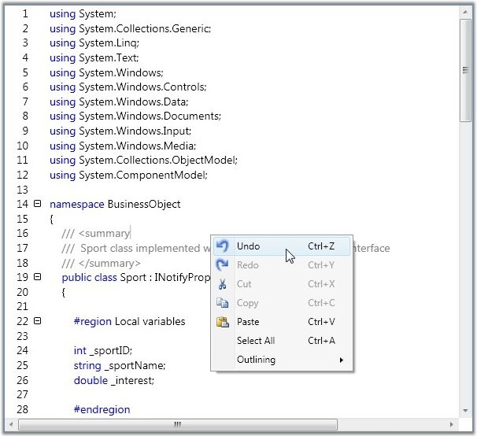

EditControl enables the users to undo or redo the unlimited number of actions performed in the EditControl. Edit control has built-in RoutedUICommand for CommandBinding Undo or Redo operations with any external controls like button, menu item, and so on. EditControl is bound with standard keyboard shortcuts such as Ctrl + Z for Undo and Ctrl + Y for Redo operations. Undo or Redo operations can also be performed using the built-in context menu.

Figure 16: "Undo" operation performed by using the Built-In Context Menu